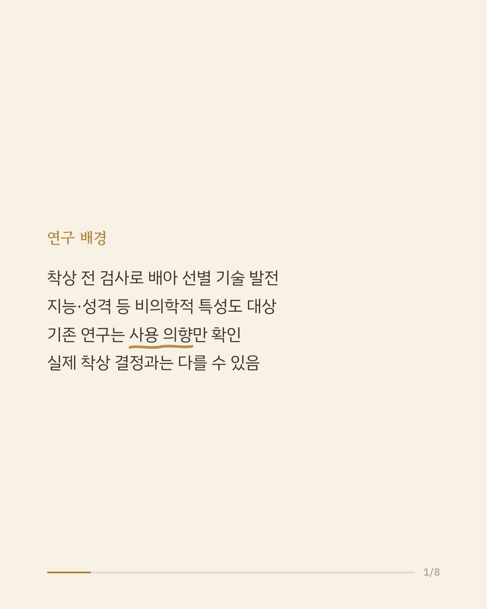
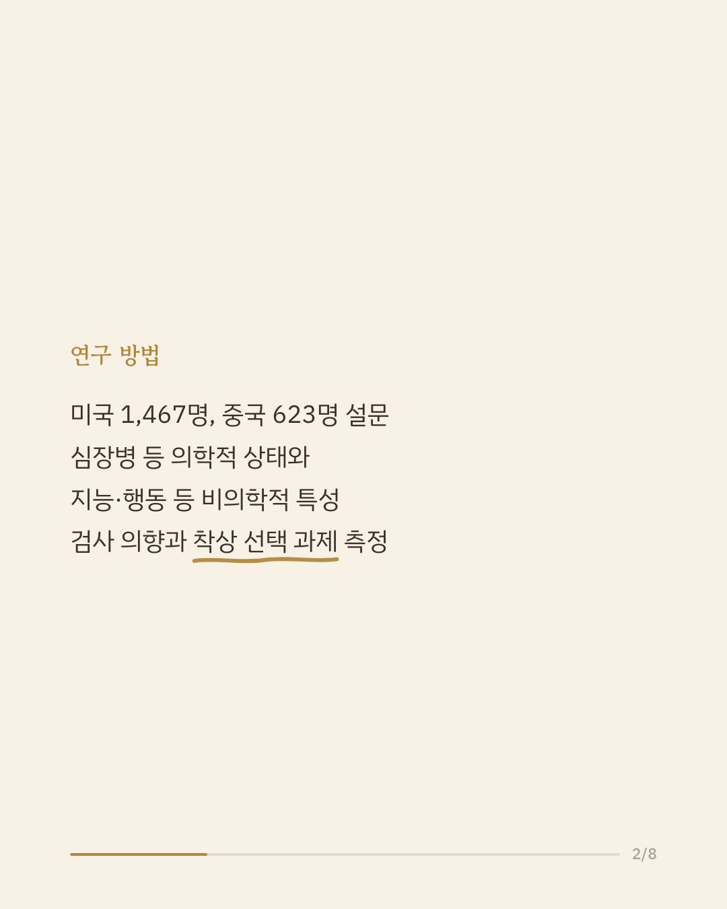
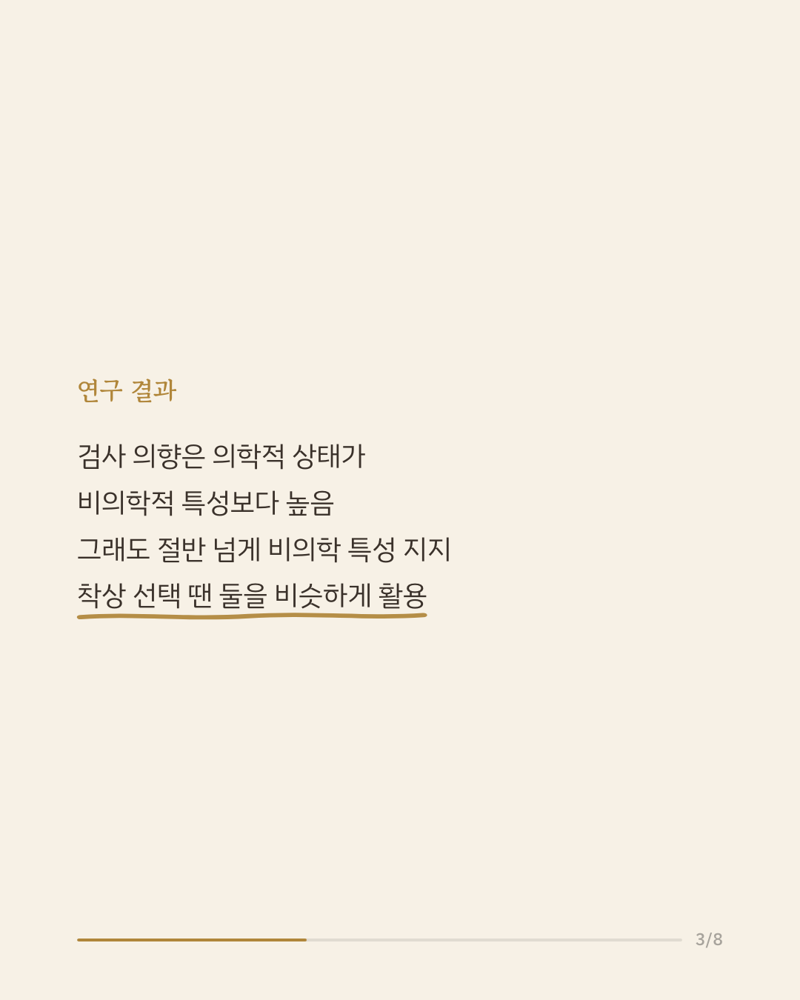
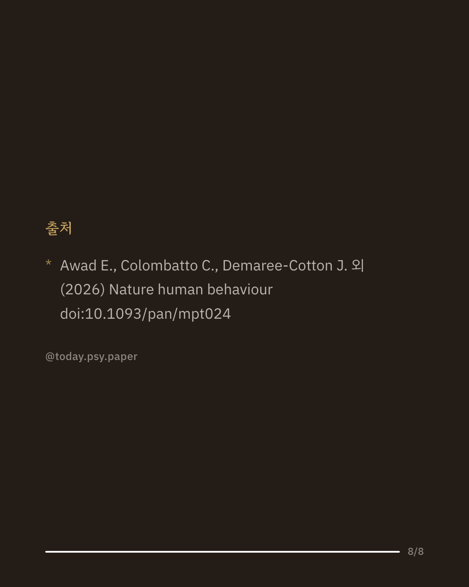

착상 전 유전자 검사 기술이 발전하면서, 이제는 질병뿐 아니라 지능이나 성격 같은 비의학적 특성까지 배아 선택의 기준이 될 수 있다는 논의가 이어지고 있습니다. 지금까지의 연구는 주로 '이런 검사를 쓸 의향이 있는가'를 물었지만, 말로 밝힌 의향이 실제 선택과 같으리라는 보장은 없습니다. 이번 연구는 미국과 중국의 일반 대중을 상대로 배아 유전자 검사에 대한 인식과 실제 선택 상황에서의 판단을 함께 살펴봤습니다. 미국 참가자 1,467명은 심장병 같은 의학적 상태를 검사하려는 의향이 반사회적 행동이나 낮은 지능 같은 비의학적 특성보다 높았지만, 절반이 넘는 사람이 비의학적 특성 검사에도 찬성했습니다. 그런데 두 배아 중 하나를 골라야 하는 강제 선택 과제에서는 의학적 정보와 비의학적 정보를 비슷한 정도로 활용했고, 중국 참가자 623명에게서도 유사한 패턴이 나타났습니다. 연구진은 의학적 상태와 비의학적 특성을 가르는 일관된 경계가 있다기보다 구체적인 특성에 따라 선택이 달라진다고 봤습니다. 다만 이 연구는 가상 시나리오에 기반한 설문이어서 실제 배아 선택 행동과는 다를 수 있고, 단일 연구이므로 확대 해석은 조심해야 합니다. 출처: Nature Human Behaviour (2026), 'Public perceptions of polygenic testing and embryo selection for non-medical traits' #생명윤리 #배아유전자검사 #생식기술 #심리학연구 #논문리뷰
python3 publish.py 42649255